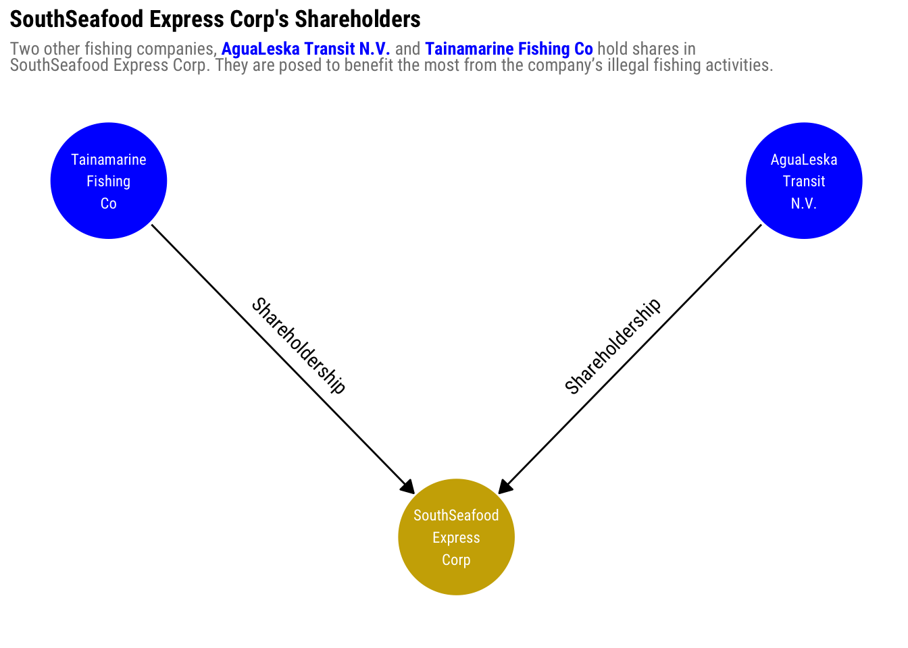
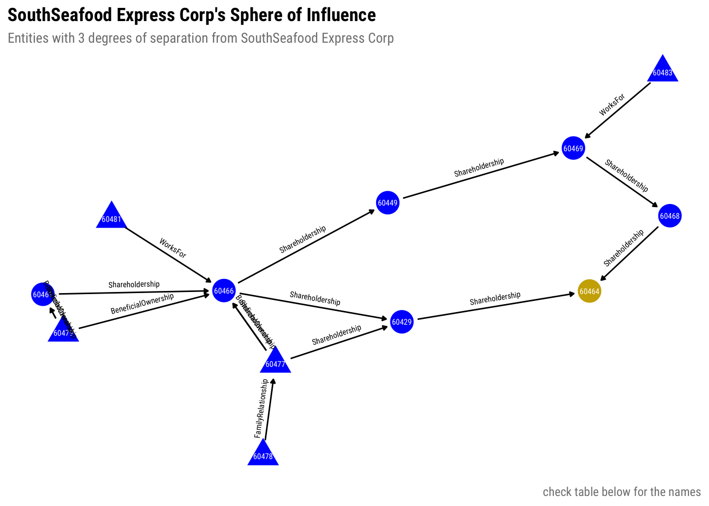

pacman::p_load(
jsonlite,
tidyverse,
ggraph,
tidygraph,
visNetwork,
patchwork,
ggtext,
knitr,
igraph,
ggiraph
)Take Home Ex3: VAST Challenge 2024 Mini-Challenge 3 [WIP]
1 Overview
2 Setup
2.1 Loading Packages
We will also set some values to have consistency throughout all graphs. This is also so that we don’t have to search and replace all instances of these
FONT_FAMILY = "Roboto Condensed"2.2 Loading Data
mc3_data <- fromJSON("data/mc3.json")
glimpse(mc3_data)List of 5
$ directed : logi TRUE
$ multigraph: logi TRUE
$ graph : Named list()
$ nodes :'data.frame': 60520 obs. of 15 variables:
..$ type : chr [1:60520] "Entity.Organization.Company" "Entity.Organization.Company" "Entity.Organization.Company" "Entity.Organization.Company" ...
..$ country : chr [1:60520] "Uziland" "Mawalara" "Uzifrica" "Islavaragon" ...
..$ ProductServices : chr [1:60520] "Unknown" "Furniture and home accessories" "Food products" "Unknown" ...
..$ PointOfContact : chr [1:60520] "Rebecca Lewis" "Michael Lopez" "Steven Robertson" "Anthony Wyatt" ...
..$ HeadOfOrg : chr [1:60520] "Émilie-Susan Benoit" "Honoré Lemoine" "Jules Labbé" "Dr. Víctor Hurtado" ...
..$ founding_date : chr [1:60520] "1954-04-24T00:00:00" "2009-06-12T00:00:00" "2029-12-15T00:00:00" "1972-02-16T00:00:00" ...
..$ revenue : num [1:60520] 5995 71767 0 0 4747 ...
..$ TradeDescription : chr [1:60520] "Unknown" "Abbott-Gomez is a leading manufacturer and supplier of high-quality furniture and home accessories, catering to"| __truncated__ "Abbott-Harrison is a leading manufacturer of high-quality food products, including baked goods, snacks, and bev"| __truncated__ "Unknown" ...
..$ _last_edited_by : chr [1:60520] "Pelagia Alethea Mordoch" "Pelagia Alethea Mordoch" "Pelagia Alethea Mordoch" "Pelagia Alethea Mordoch" ...
..$ _last_edited_date: chr [1:60520] "2035-01-01T00:00:00" "2035-01-01T00:00:00" "2035-01-01T00:00:00" "2035-01-01T00:00:00" ...
..$ _date_added : chr [1:60520] "2035-01-01T00:00:00" "2035-01-01T00:00:00" "2035-01-01T00:00:00" "2035-01-01T00:00:00" ...
..$ _raw_source : chr [1:60520] "Existing Corporate Structure Data" "Existing Corporate Structure Data" "Existing Corporate Structure Data" "Existing Corporate Structure Data" ...
..$ _algorithm : chr [1:60520] "Automatic Import" "Automatic Import" "Automatic Import" "Automatic Import" ...
..$ id : chr [1:60520] "Abbott, Mcbride and Edwards" "Abbott-Gomez" "Abbott-Harrison" "Abbott-Ibarra" ...
..$ dob : chr [1:60520] NA NA NA NA ...
$ links :'data.frame': 75817 obs. of 11 variables:
..$ start_date : chr [1:75817] "2016-10-29T00:00:00" "2035-06-03T00:00:00" "2028-11-20T00:00:00" "2024-09-04T00:00:00" ...
..$ type : chr [1:75817] "Event.Owns.Shareholdership" "Event.Owns.Shareholdership" "Event.Owns.Shareholdership" "Event.Owns.Shareholdership" ...
..$ _last_edited_by : chr [1:75817] "Pelagia Alethea Mordoch" "Niklaus Oberon" "Pelagia Alethea Mordoch" "Pelagia Alethea Mordoch" ...
..$ _last_edited_date: chr [1:75817] "2035-01-01T00:00:00" "2035-07-15T00:00:00" "2035-01-01T00:00:00" "2035-01-01T00:00:00" ...
..$ _date_added : chr [1:75817] "2035-01-01T00:00:00" "2035-07-15T00:00:00" "2035-01-01T00:00:00" "2035-01-01T00:00:00" ...
..$ _raw_source : chr [1:75817] "Existing Corporate Structure Data" "Oceanus Corporations Monthly - Jun '35" "Existing Corporate Structure Data" "Existing Corporate Structure Data" ...
..$ _algorithm : chr [1:75817] "Automatic Import" "Manual Entry" "Automatic Import" "Automatic Import" ...
..$ source : chr [1:75817] "Avery Inc" "Berger-Hayes" "Bowers Group" "Bowman-Howe" ...
..$ target : chr [1:75817] "Allen, Nichols and Thompson" "Jensen, Morris and Downs" "Barnett Inc" "Bennett Ltd" ...
..$ key : int [1:75817] 0 0 0 0 0 0 0 0 0 0 ...
..$ end_date : chr [1:75817] NA NA NA NA ...It contains graph data, where nodes can be accessed via nodes and edges via links. This dataset has a lot of columns but we will only filter the relevant data during wrangling..
3 Data Wrangling
3.1 Extracting Graph Elements
For simplicity, we will only extract the columns that are needed to do graph analysis. We will also ignore the time elements for now so we will not be including them in the analysis.
The nodes represent the entities in the network. They can be people or companies.
mc3_nodes_raw <- as_tibble(mc3_data$nodes)
glimpse(mc3_nodes_raw)Rows: 60,520
Columns: 15
$ type <chr> "Entity.Organization.Company", "Entity.Organizatio…
$ country <chr> "Uziland", "Mawalara", "Uzifrica", "Islavaragon", …
$ ProductServices <chr> "Unknown", "Furniture and home accessories", "Food…
$ PointOfContact <chr> "Rebecca Lewis", "Michael Lopez", "Steven Robertso…
$ HeadOfOrg <chr> "Émilie-Susan Benoit", "Honoré Lemoine", "Jules La…
$ founding_date <chr> "1954-04-24T00:00:00", "2009-06-12T00:00:00", "202…
$ revenue <dbl> 5994.73, 71766.67, 0.00, 0.00, 4746.67, 46566.67, …
$ TradeDescription <chr> "Unknown", "Abbott-Gomez is a leading manufacturer…
$ `_last_edited_by` <chr> "Pelagia Alethea Mordoch", "Pelagia Alethea Mordoc…
$ `_last_edited_date` <chr> "2035-01-01T00:00:00", "2035-01-01T00:00:00", "203…
$ `_date_added` <chr> "2035-01-01T00:00:00", "2035-01-01T00:00:00", "203…
$ `_raw_source` <chr> "Existing Corporate Structure Data", "Existing Cor…
$ `_algorithm` <chr> "Automatic Import", "Automatic Import", "Automatic…
$ id <chr> "Abbott, Mcbride and Edwards", "Abbott-Gomez", "Ab…
$ dob <chr> NA, NA, NA, NA, NA, NA, NA, NA, NA, NA, NA, NA, NA…We will only retain the following columns:
id- to serve as the identifier for the nodetype- to differentiate people from companies in the graph.
mc3_nodes_lite <- mc3_nodes_raw %>% select(id, type)The edges represent the relationship between different nodes.
mc3_edges_raw <- as_tibble(mc3_data$links)
glimpse(mc3_edges_raw)Rows: 75,817
Columns: 11
$ start_date <chr> "2016-10-29T00:00:00", "2035-06-03T00:00:00", "202…
$ type <chr> "Event.Owns.Shareholdership", "Event.Owns.Sharehol…
$ `_last_edited_by` <chr> "Pelagia Alethea Mordoch", "Niklaus Oberon", "Pela…
$ `_last_edited_date` <chr> "2035-01-01T00:00:00", "2035-07-15T00:00:00", "203…
$ `_date_added` <chr> "2035-01-01T00:00:00", "2035-07-15T00:00:00", "203…
$ `_raw_source` <chr> "Existing Corporate Structure Data", "Oceanus Corp…
$ `_algorithm` <chr> "Automatic Import", "Manual Entry", "Automatic Imp…
$ source <chr> "Avery Inc", "Berger-Hayes", "Bowers Group", "Bowm…
$ target <chr> "Allen, Nichols and Thompson", "Jensen, Morris and…
$ key <int> 0, 0, 0, 0, 0, 0, 0, 0, 0, 0, 0, 0, 0, 0, 0, 0, 0,…
$ end_date <chr> NA, NA, NA, NA, NA, NA, NA, NA, NA, NA, NA, NA, NA…We will only retain the following columns:
source- to identify the actor of the relationship, corresponds toidin nodes.target- to identify the receiver of the relationship, corresponds toidin nodes.type- to identify the type of the relationship
mc3_edges_lite <- mc3_edges_raw %>% select(source, target, type)3.2 Closer look at type
Both the nodes and edges have type which contains the type of the nodes and edges. We will assign a supertype and a subtype from type.
(mc3_nodes_lite$type) %>% unique()[1] "Entity.Organization.Company"
[2] "Entity.Organization.LogisticsCompany"
[3] "Entity.Organization.FishingCompany"
[4] "Entity.Organization.FinancialCompany"
[5] "Entity.Organization.NewsCompany"
[6] "Entity.Organization.NGO"
[7] "Entity.Person"
[8] "Entity.Person.CEO" supertype - type of entity, either Person or Organization
subtype - subcategory of supertype, e.g., Company, FishingCompany, CEO
(mc3_edges_lite$type) %>% unique()[1] "Event.Owns.Shareholdership" "Event.Owns.BeneficialOwnership"
[3] "Event.WorksFor" "Relationship.FamilyRelationship"supertype - type of relationship, either Ownership, Employment, Relationship.
subtype - subcategory of supertype, e.g., Shareholdership, BeneficialOwnership, FamilyRelationship
3.3 Preparing the data
With the considerations above, we will shape the data needed for our graph visualization.
For nodes, we will also assign a shape for visualization depending on supertype. For people, we will use 📐, while we use 🔴 for organizations.
Lastly, we will assign numbers to each node as an alternative label to the ids (as they are long).
PERSON_SHAPE = "triangle"
ORGANIZATION_SHAPE = "circle"
mc3_nodes_clean <- mc3_nodes_lite %>%
mutate(
supertype = strsplit(type, ".", fixed=TRUE) %>% sapply('[', 2),
# Get the last type as subtype. In the case of Entity.Person,
# both supertype and subtype are "Person".
subtype = strsplit(type, ".", fixed=TRUE) %>% sapply(tail, n=1),
num = row_number(),
shape = ifelse(supertype == "Person", PERSON_SHAPE, ORGANIZATION_SHAPE)
) %>%
select(id, num, supertype, subtype, shape)
kable(head(mc3_nodes_clean))| id | num | supertype | subtype | shape |
|---|---|---|---|---|
| Abbott, Mcbride and Edwards | 1 | Organization | Company | circle |
| Abbott-Gomez | 2 | Organization | Company | circle |
| Abbott-Harrison | 3 | Organization | Company | circle |
| Abbott-Ibarra | 4 | Organization | Company | circle |
| Abbott-Sullivan | 5 | Organization | Company | circle |
| Acevedo and Sons | 6 | Organization | Company | circle |
Let’s also check if supertype, subtype, and shape have been mapped correctly.
mc3_nodes_clean %>%
group_by(supertype, subtype, shape) %>%
summarize(count = n()) %>%
arrange(-count) %>%
kable()| supertype | subtype | shape | count |
|---|---|---|---|
| Person | Person | triangle | 50356 |
| Organization | Company | circle | 7927 |
| Person | CEO | triangle | 1293 |
| Organization | FishingCompany | circle | 600 |
| Organization | LogisticsCompany | circle | 311 |
| Organization | FinancialCompany | circle | 23 |
| Organization | NGO | circle | 5 |
| Organization | NewsCompany | circle | 5 |
For ggraph to plot the edges correctly, we need to assigns weights to the edges. For simplicity, let us assign the number of edges with the same source, target and type.
Lastly, we will change source and target to from and to, respectively for compatibility with network functions we will use.
mc3_edges_clean <- mc3_edges_lite %>%
rename(from = source, to = target, ) %>%
mutate(
supertype = ifelse(
grepl("Event.Owns", type),
"Ownership",
ifelse(grepl("Relationship", type), "Relationship", "Employment")
),
subtype = strsplit(type, ".", fixed = TRUE) %>% sapply(tail, n = 1)
) %>%
filter(from != to) %>%
group_by(from, to, supertype, subtype) %>%
summarize(weight = n())
kable(head(mc3_edges_clean))| from | to | supertype | subtype | weight |
|---|---|---|---|---|
| 4. SeaCargo Ges.m.b.H. | Dry CreekRybachit Marine A/S | Ownership | Shareholdership | 1 |
| 4. SeaCargo Ges.m.b.H. | KambalaSea Freight Inc | Ownership | Shareholdership | 1 |
| 9. RiverLine CJSC | SumacAmerica Transport GmbH & Co. KG | Ownership | Shareholdership | 1 |
| Aaron Acosta | Manning-Pratt | Employment | WorksFor | 1 |
| Aaron Acosta | Manning-Pratt | Ownership | Shareholdership | 1 |
| Aaron Allen | Hicks-Calderon | Ownership | BeneficialOwnership | 1 |
Lastly, let’s check if type has been mapped correctly to supertype and subtype.
mc3_edges_clean %>%
group_by(supertype, subtype) %>%
summarize(count = n()) %>%
arrange(-count) %>%
kable()| supertype | subtype | count |
|---|---|---|
| Ownership | Shareholdership | 39378 |
| Ownership | BeneficialOwnership | 21529 |
| Employment | WorksFor | 14817 |
| Relationship | FamilyRelationship | 91 |
3.4 Preparing the supernetwork
We will prepare the supernetwork from the nodes and edges we prepared.
supernetwork = tbl_graph(edges = mc3_edges_clean,
nodes = mc3_nodes_clean,
directed = TRUE)We call this a supernetwork as this is a collection of smaller, unconnected networks.
4 Investigating SouthSeafood Express Corp
From VAST Challenge 2024 Mini-case 3:
Identify the network associated with SouthSeafood Express Corp and visualize how this network and competing businesses change as a result of their illegal fishing behavior. Which companies benefited from SouthSeafood Express Corp legal troubles? Are there other suspicious transactions that may be related to illegal fishing? Provide visual evidence for your conclusions.
Solving the smaller problem first
Although the question about SouthSeafood Express Corp is the last question, we will start with investigating its relationships so we can generalize to make inferences to the rest of the network, for Question 3.
To do the investigation, our strategy is to start with the smallest network first to the biggest. We will be looking at:
- Direct neighbors - They have the strongest influence on and can be influenced the most by SouthSeafood Express Corp.
- Sphere of influence - Based on Nicholas A. Christakis and James H. Fowler’s theory of Three Degrees of Influence, which states that that influence gradually dissipates and eventually cease to be notable beyond the 3rd degree of separation.
- Full connected network - We will look at the entire network containing the nodes that have paths to SouthSeafood Express Corp.
In order to do this, we need to identify the SouthSeafood Express Corp node first.
ssfec_node <- which(V(supernetwork)$id == "SouthSeafood Express Corp")We will use ego() and induced_graph() functions from igraph to generate the subnetworks related to this node.
We will use the function below to get the subgraphs:
RStudio breaks when defining functions
Rstudio breaks as soon as I type function(){} in a code chunk.
This results in not being able to save the file and not being able to run any code chunk. Hence, we will just copy the code below everytime while setting the variables.
par_graph = supernetwork # the graph to extract the subgraph from
par_nodes = ssfec_node # reference node
par_distance = 1 # distance from the reference node
fvar_vertices <- ego(par_graph, nodes = par_nodes, order = par_distance)[[1]]
fvar_igraph_subgraph <- induced_subgraph(par_graph, vids = fvar_vertices)
fvar_nodes_df <- as_data_frame(fvar_igraph_subgraph, what = "vertices") %>% rename(id = name)
fvar_edges_sf <- as_data_frame(fvar_igraph_subgraph, what = "edges")
out_subgraph <- graph_from_data_frame(fvar_edges_sf, vertices=fvar_nodes_df, directed=TRUE)4.1 Direct Neighbors
4.1.1 Extracting the subgraph
We will first extract the direct neighbors for SouthSeafood Express Corp.
par_graph = supernetwork
par_nodes = ssfec_node
par_distance = 1Show function code
fvar_vertices <- ego(par_graph, nodes = par_nodes, order = par_distance)[[1]]
fvar_igraph_subgraph <- induced_subgraph(par_graph, vids = fvar_vertices)
fvar_nodes_df <- as_data_frame(fvar_igraph_subgraph, what = "vertices")
fvar_edges_sf <- as_data_frame(fvar_igraph_subgraph, what = "edges")
out_subgraph <- tbl_graph(nodes = fvar_nodes_df, edges=fvar_edges_sf, directed=TRUE)We will also add focus on the SouthSeafood Express Corp node to emphasize it.
ssfec_direct_neighbors <- out_subgraph %>%
mutate(focus = (id == "SouthSeafood Express Corp"))4.1.2 Plotting the graph
Finally, we can plot the graph of SouthSeafood Express Corp direct neighbors.
Show ggraph code
ggraph(ssfec_direct_neighbors, layout = "linear", circular = TRUE) +
# Render nodes
geom_node_point(aes(color = focus, shape = shape), show.legend = FALSE, size = 30) +
geom_node_text(
aes(label = str_wrap(id, width = -1)),
family = FONT_FAMILY,
size = 3,
color = "white"
) +
scale_color_manual(values = c("blue", "gold3")) +
# Render edges
geom_edge_link(
aes(label = subtype),
# Control arrow
arrow = arrow(type = "closed", length = unit(0.025, "npc")),
end_cap = circle(12, "mm"),
start_cap = circle(12, "mm"),
# Format labels
angle_calc = "along",
label_dodge = unit(0.04, "npc"),
family = FONT_FAMILY,
show.legend = FALSE
) +
# Hack to reduce distance between nodes
# This is to not clip the nodes in the edge of the plot
# ref: https://stackoverflow.com/a/66991383
ylim(-1.3, 0.8) +
xlim(-1, 1) +
# Style graph
unset_graph_style() +
theme_graph(base_family = FONT_FAMILY, plot_margin = margin(0)) +
plot_annotation(
title = "SouthSeafood Express Corp's Shareholders",
subtitle = "Two other fishing companies, <span style='color:blue;'>**AguaLeska Transit N.V.**</span> and <span style='color:blue;'>**Tainamarine Fishing Co**</span> hold shares in<br />SouthSeafood Express Corp. They are posed to benefit the most from the company's illegal fishing activities.") &
theme(
text = element_text(family = FONT_FAMILY),
plot.title = element_text(face = "bold", size = rel(1.2)),
plot.subtitle = element_markdown(color = "grey50", , size = rel(0.9))
)
Insights
As shareholders, AguaLeska Transit N.V. and Tainamarine Fishing Co have big influence on where the resources of SouthSeafood Express Corp go.
In this case, most of it will most likely opposite of the arrow direction, i.e. benefitting the shareholders.
4.2 Sphere of influence
4.2.1 Extracting the subgraph
We will first extract the direct neighbors for SouthSeafood Express Corp. We will use distance=3, based on Three Degrees of Influence.
par_graph = supernetwork
par_nodes = ssfec_node
par_distance = 3Show function code
fvar_vertices <- ego(par_graph, nodes = par_nodes, order = par_distance)[[1]]
fvar_igraph_subgraph <- induced_subgraph(par_graph, vids = fvar_vertices)
fvar_nodes_df <- as_data_frame(fvar_igraph_subgraph, what = "vertices")
fvar_edges_sf <- as_data_frame(fvar_igraph_subgraph, what = "edges")
out_subgraph <- tbl_graph(nodes = fvar_nodes_df, edges=fvar_edges_sf, directed=TRUE)We will also add focus on the SouthSeafood Express Corp node to emphasize it.
ssfec_sphere_of_influence <- out_subgraph %>%
mutate(focus = (id == "SouthSeafood Express Corp"))4.2.2 Plotting the graph
Finally, we can plot the graph of SouthSeafood Express Corp’s sphere of influence.
Show ggraph code
set.seed(911)
ggraph(ssfec_sphere_of_influence, layout = "nicely") +
geom_node_point(aes(color = focus, shape = shape),
size = 7.5,
show.legend = FALSE) +
geom_node_text(
aes(label = num),
family = FONT_FAMILY,
size = 2,
color = 'white'
) +
geom_edge_link(
aes(label = subtype),
arrow = arrow(type = "closed", length = unit(0.01, "npc")),
end_cap = circle(4, "mm"),
start_cap = circle(4, "mm"),
angle_calc = "along",
label_dodge = unit(0.02, "npc"),
label_size = 2,
family = FONT_FAMILY
) +
scale_color_manual(values = c("blue", "gold3")) +
scale_alpha_continuous(range = c(1, 0.7)) +
# Style graph
unset_graph_style() +
theme_graph(base_family = FONT_FAMILY, plot_margin = margin(0)) +
plot_annotation(title = "SouthSeafood Express Corp's Sphere of Influence",
subtitle = "Entities with 3 degrees of separation from SouthSeafood Express Corp",
caption = "*check table below for the names*") &
theme(
text = element_text(family = FONT_FAMILY),
plot.title = element_text(face = "bold", size = rel(1.2)),
plot.subtitle = element_markdown(color = "grey50", , size = rel(0.9)),
plot.caption = element_markdown(color = "grey50")
)
Show code
ssfec_sphere_of_influence %>%
activate(nodes) %>%
arrange(num) %>%
select(num, id, supertype, subtype) %>%
kable()| num | id | supertype | subtype |
|---|---|---|---|
| 60429 | AguaLeska Transit N.V. | Organization | FishingCompany |
| 60449 | Namorna Transit Ltd | Organization | Company |
| 60461 | SavanetaCreek Solutions NV | Organization | LogisticsCompany |
| 60464 | SouthSeafood Express Corp | Organization | FishingCompany |
| 60466 | StichtingMarine Shipping Company | Organization | FishingCompany |
| 60468 | Tainamarine Fishing Co | Organization | FishingCompany |
| 60469 | V. Miesel Shipping | Organization | Company |
| 60477 | Liam Conti | Person | Person |
| 60478 | Nadia Conti | Person | Person |
| 60479 | Fintan Park | Person | Person |
| 60481 | Sanaa El-Amin | Person | Person |
| 60483 | Elise Hauser | Person | Person |
Insights
The network map is comprised mostly of Shareholderships and BenificialOwnerships.
SouthSeafood Express Corp’s (60464) shareholders, AguaLeska Transit N.V. (60429) and Tainamarine Fishing Co (60468) have other shareholders.
StichtingMarine Shipping Company (60466) holds shares of these companies (through other companies). SavanetaCreek Solutions NV (60461), a Logistics Company holds shareholdership on this Fishing Company as well.
Furthermore, Liam Conti (60477) and Fintan Park (60479) are the beneficial owners of these companies so they have the final decision-making power. Lastly, as Liam Conti’s family member, Nadia Conti (60478) may also benefit from Liam’s ownership of companies.
These 5 nodes are candidates to be the most influential nodes in the network and benefit the most from the resources generated by this network.